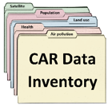
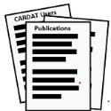
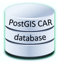
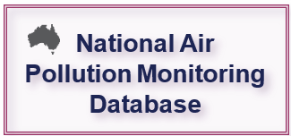
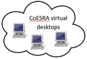
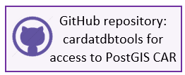

CARDAT
Welcome to CARDAT
Centre for Air pollution, energy and health Research (CAR) Data Analysis Technology (DAT) is a collection of IT infrastructure that enables easy data sharing and reuse, and reproducible data analysis. It is an online research platform that collates a wide array of population, health and environmental datasets with a collection of analysis tools and methodology resources. The data in CARDAT includes air pollution, weather and built environment data in Australia and internationally. This platform enables collaboration between researchers and policy makers.
CARDAT's mission is to provide data, methods and tools to support CAR to inform policy though research and analysis of air pollution, energy and health.
CARDAT Infrastructure
CARDAT is a group of online technologies and data management tools for storing, accessing, and analysing datasets that are useful for epidemiology. The major components can be seen in figure 1 below.

Metadata, data discovery and reporting tools
The CAR Data Inventory: a catalogue of available datasets and their associated metadata records).
CARDAT reports: the CAR Data Inventory tracks user access and data sharing for reporting to data owners on usage.
Secure data storage
CloudStor: A cloud based file store which enables shared access to datasets, and the ability to sync data automatically, and
PostGIS CAR DB: A PostGres database with PostGIS spatial extention that contains a range of air pollution, land use, population, satellite and climate data.
National Air Pollution Monitoring Database: A spatial database containing standardised regulatory air pollution monitoring data from state and territory governments across Australia. This database is stored in the PostGIS CAR Database.
Virtual desktop environments
CoESRA: A configuarble online platform for data analysis. which provides a secure environment for reproducible, collaborative data analysis. Data from CloudStor and the PostGIS CAR DB can be accessed from CoESRA desktops.
Data access and analysis tools
Cardatdbtools GitHub repository: A public repository of R functions for interacting with PostGIS CAR and the National Air Pollution Monitor Database.